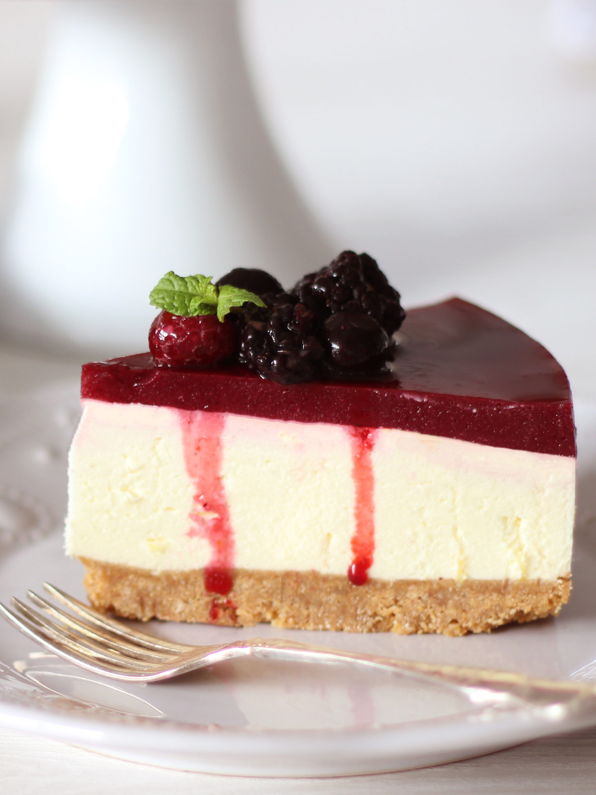

American Cheese Cake

Decription
A dessert consisting of a creamy filling usually containing cheese baked in a pastry or pressed-crumb shell
Ingredients
For the Crust
- 170g graham cracker crumbs
- 2 Tablespoon sugar
- 1 tablespoon brown or white sugar
- 7 tablespoons of melted butter
Cheese Cake
- 910g of softened cream cheese
- 200g sugar
- 160g sour cream
- 1 and half tablespoon of vanilla extract
- an eigth teaspoon of salt
- 4 large eggs
Steps
- Preheat the oven to 325F or 160C
- Prepare graham cracker crust by combining graham cracker crumbs, sugar and brown sugar and stirring well. Add metled butter and use a fork to combine ingredients well
- Pour crumbs into springform pan and press firmly into the bottom and up the sides of the pan. Set aside